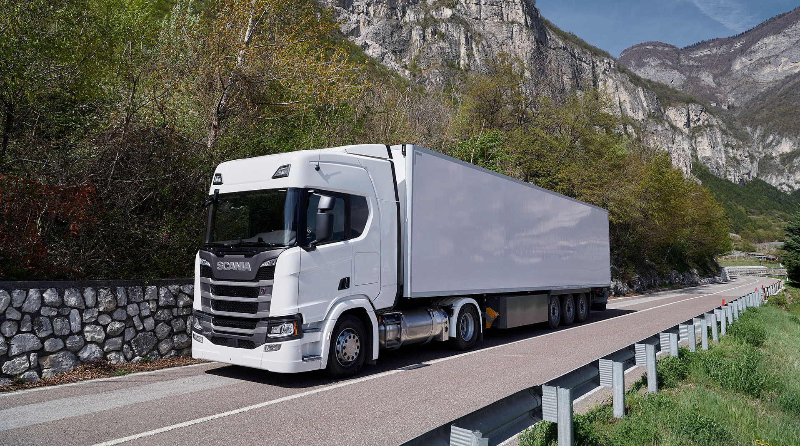
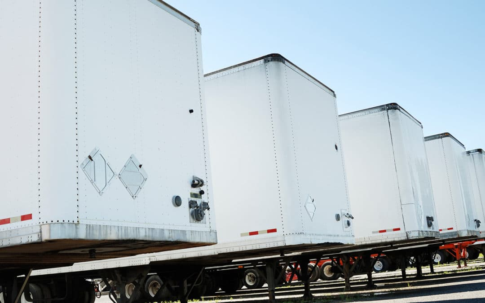
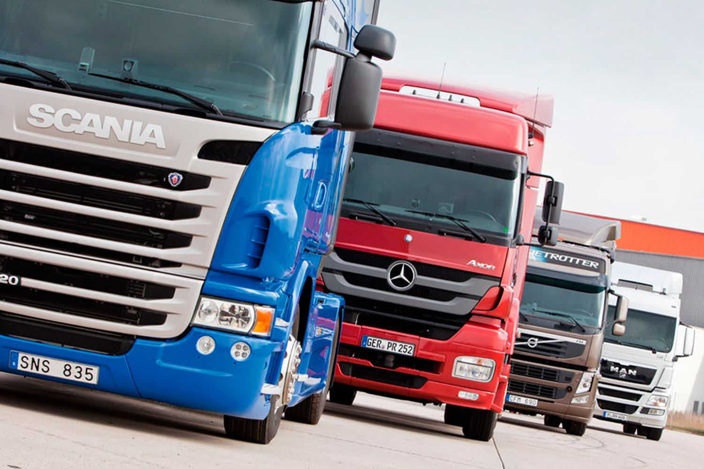
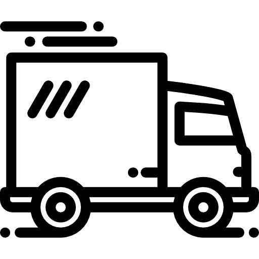

What We Do
General Trucking Services is a multinational company that provides trucking services to businesses and individuals. We have a fleet of trucks that can handle any size job, from small deliveries to large shipments. Our drivers are experienced and professional, and we pride ourselves on our excellent customer service. Whether you need to move goods across town or across the country, General Trucking Services has you covered.
Our mission is to provide reliable and efficient trucking services to our customers. We are committed to delivering your goods safely and on time, every time. We offer competitive rates and flexible scheduling to meet your needs. Contact us today to learn more about our services and how we can help you with your trucking needs.

What We Deliver
General Trucking Services can transport a wide variety of goods, including food, clothing, electronics, and more. We have experience moving fragile and perishable items, and we take great care to ensure that your goods arrive safely and on time. Our trucks are equipped with state-of-the-art tracking technology, so you can monitor the progress of your shipment in real time. Whether you need to move a single pallet or a full truckload, General Trucking Services can help.
We offer a range of delivery options to meet your needs, including same-day, next-day, and express delivery. Our drivers are trained to handle all types of cargo, so you can trust that your goods are in good hands. Contact us today to learn more about our delivery services and how we can help you with your shipping needs.

What We Drive
General Trucking Services has a fleet of trucks that can handle any size job. Our trucks are well-maintained and equipped with the latest safety features, so you can trust that your goods will arrive in perfect condition. We offer a variety of truck sizes to accommodate different types of shipments, and our drivers are trained to handle all kinds of cargo. Whether you need a small van or a full-size tractor-trailer, General Trucking Services has the right truck for the job.

We take pride in our fleet of trucks and are committed to providing the best possible service to our customers. Our drivers are experienced and professional, and we work hard to ensure that your goods arrive safely and on time. Contact us today to learn more about our trucks and how we can help you with your shipping needs.
Box Truck

Our box trucks are perfect for small to medium-sized shipments. They are equipped with lift gates for easy loading and unloading, and they have plenty of space for your goods.
Flatbed Trailer
Our flatbed trailers are ideal for oversized or irregularly shaped cargo. They are easy to load and unload, and they can accommodate a wide variety of goods.
Refrigerated Trailer
Our refrigerated trailers are perfect for transporting perishable items. They are equipped with temperature-controlled compartments to keep your goods fresh.
Articulated Trailer
Our articulated trailers are designed for large quantity shipments. They are pulled by a tractor truck and can carry a significant amount of cargo.